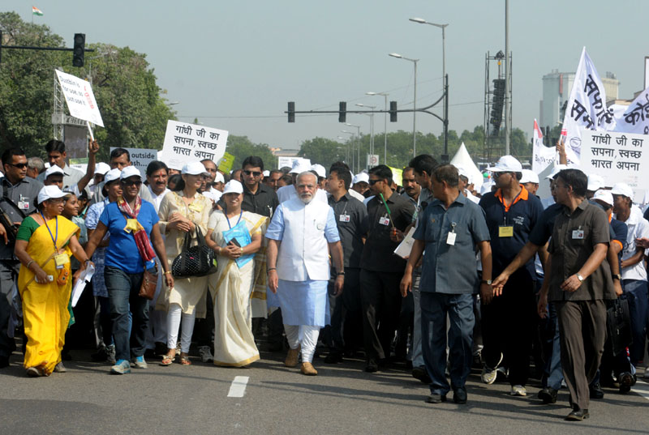
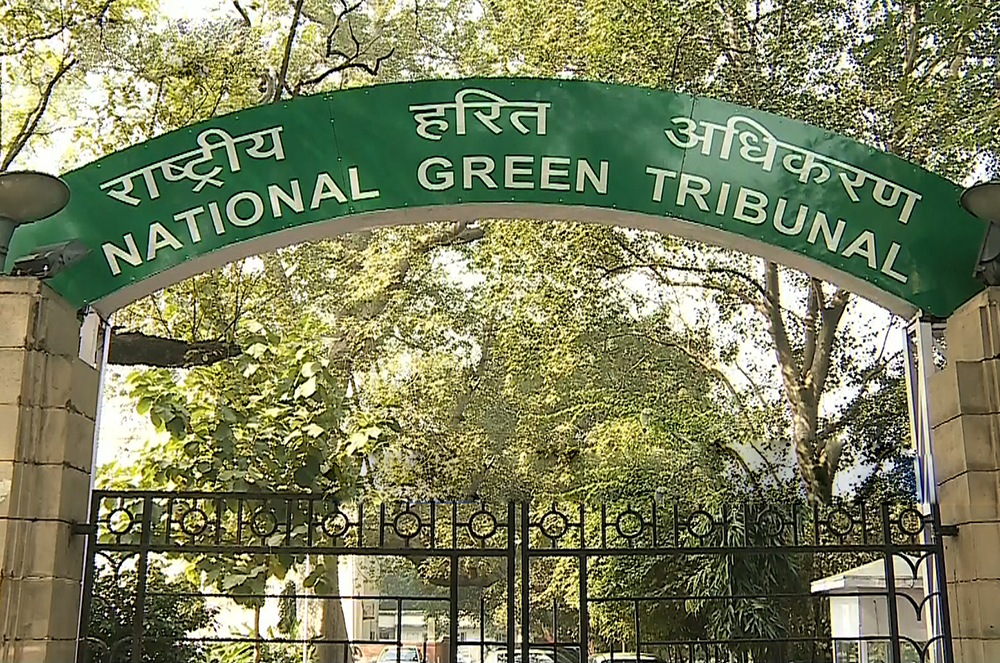
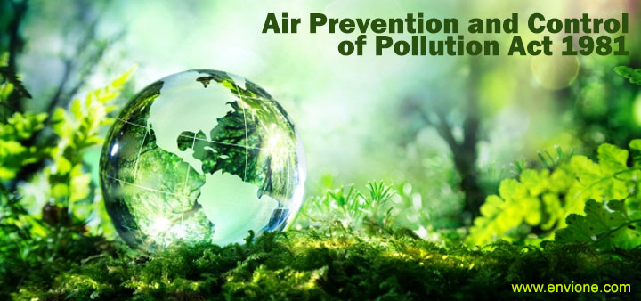
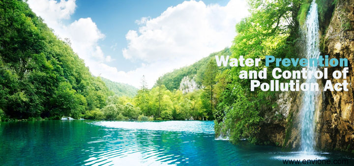

Swachh Bharat Abhiyan (SBA) or Swachh Bharat Mission (SBM) 2015-2019
Swachh Bharat Abhiyan (SBA) or Swachh Bharat Mission (SBM) is a nation-wide campaign in India for
the period 2014 to 2019 that aims to clean up the streets, roads and infrastructure of India's cities,
towns, and rural areas. The campaign's official name is in Hindi and translates to 'Clean India Mission'
in English. The objectives of Swachh Bharat include eliminating open defecation through the construction
of household-owned and community-owned toilets and establishing an accountable mechanism of monitoring
toilet use. Run by the Government of India.

The National Green Tribunal Act, 2010
The National Green Tribunal Act, 2010 (No. 19 of 2010) (NGT Act) has been enacted with the objectives
to provide for establishment of a National Green Tribunal (NGT) for the effective and expeditious disposal
of cases relating to environment protection and conservation of forests and other natural resources including
enforcement of any legal right relating to environment and giving relief and compensation for damages to persons
and property and for matters connected therewith or incidental thereto.

The Air (Prevention and Control of Pollution) Act, 1981
The Air (Prevention and Control of Pollution) Act, 1981 (the "Air Act") is an act to provide for the prevention,
control and abatement of air pollution and for the establishment of Boards at the Central and State levels with a view
to carrying out the aforesaid purposes.

The Water (Prevention and Control of Pollution) Act, 1974
The Water Prevention and Control of Pollution Act, 1974 (the "Water Act") has been enacted to provide for the prevention
and control of water pollution and to maintain or restore wholesomeness of water in the country. It further provides for the
establishment of Boards for the prevention and control of water pollution with a view to carry out the aforesaid purposes.

The Environment protection act 1986
The Environment Protection Act, 1986 (the "Environment Act") provides for the protection and improvement of environment. The
Environment Protection Act establishes the framework for studying, planning and implementing long-term requirements of environmental
safety and laying down a system of speedy and adequate response to situations threatening the environment. It is an umbrella legislation
designed to provide a framework for the coordination of central and state authorities established under the Water Act, 1974 and the Air
Act